Gro Pro Centurion Tree Felling Landscaping Company
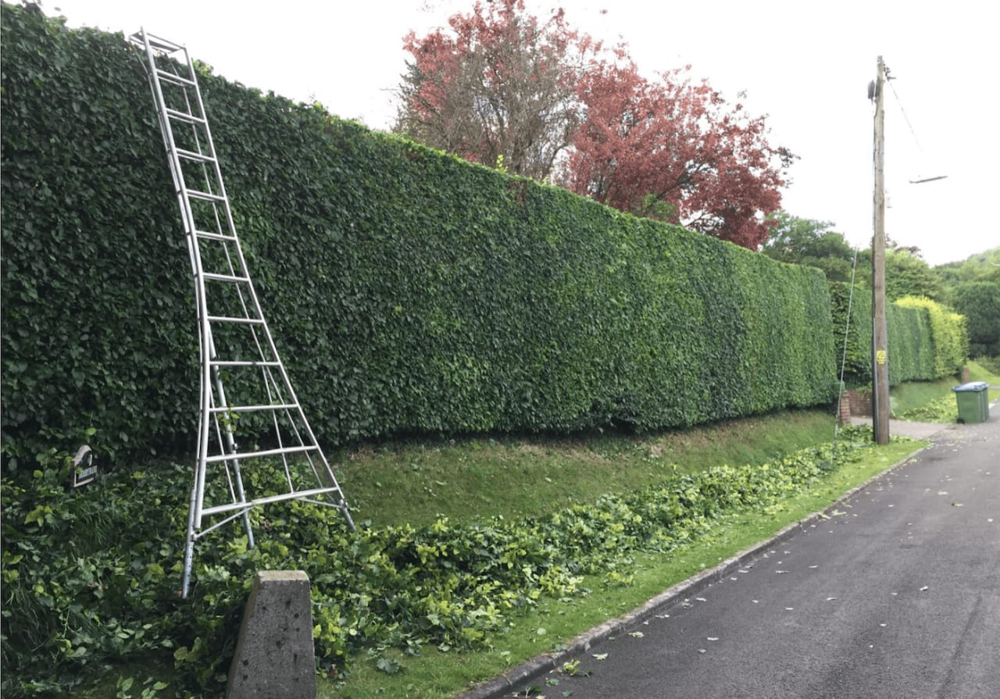
About Us
Welcome to Gro Pro Centurion Tree Felling Landscaping Company, your trusted partner in transforming outdoor spaces with over 15 years of dedicated service in the field. Nestled in the heart of Centurion, we proudly serve the local communities of Centurion, Pretoria, and Pretoria East.
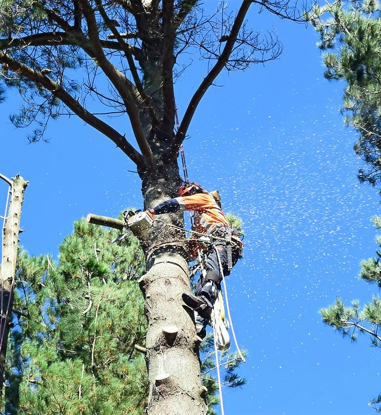
At Gro Pro, we understand the significance of well-maintained landscapes and the impact they have on the aesthetics and functionality of your property. With a wealth of experience accumulated over a decade and a half, we have become synonymous with excellence in tree felling, landscaping, and related services.
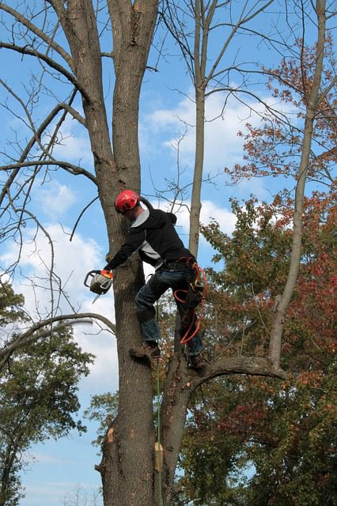
Our Services:
Tree Felling: Our skilled team of professionals specializes in precise and safe tree felling, ensuring the removal of unwanted or hazardous trees without compromising the safety of your property.
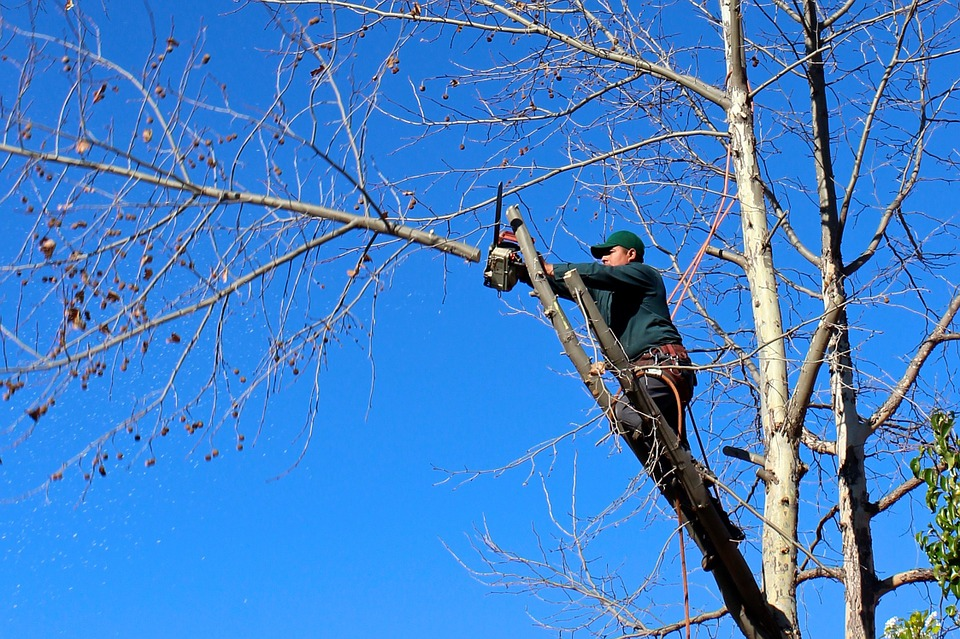
Tree Cutting: We employ cutting-edge techniques to expertly trim and shape trees, promoting their health and enhancing the overall appeal of your outdoor spaces.
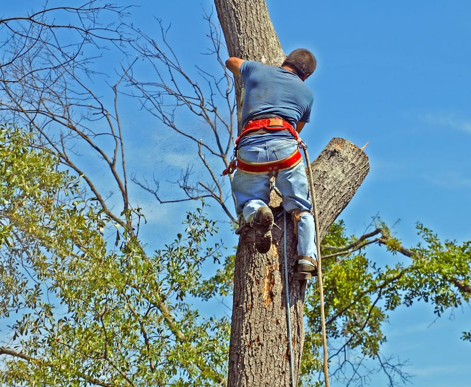
Tree Stump Removals: Say goodbye to unsightly tree stumps with our efficient stump removal services. We utilize advanced equipment to grind and eliminate remnants, leaving your landscape smooth and visually pleasing.
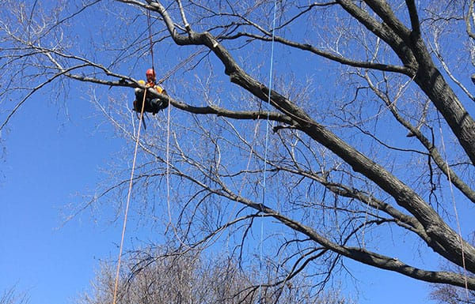
Replanting: Enhance the greenery on your property with our replanting services. We carefully select and plant trees suited to your environment, contributing to the sustainable beautification of your surroundings.
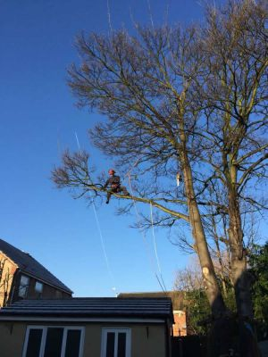
Landscaping: Our passion lies in creating captivating landscapes that reflect your unique vision. Whether you desire a serene garden retreat or a vibrant outdoor entertaining space, our landscaping experts bring creativity and expertise to every project.
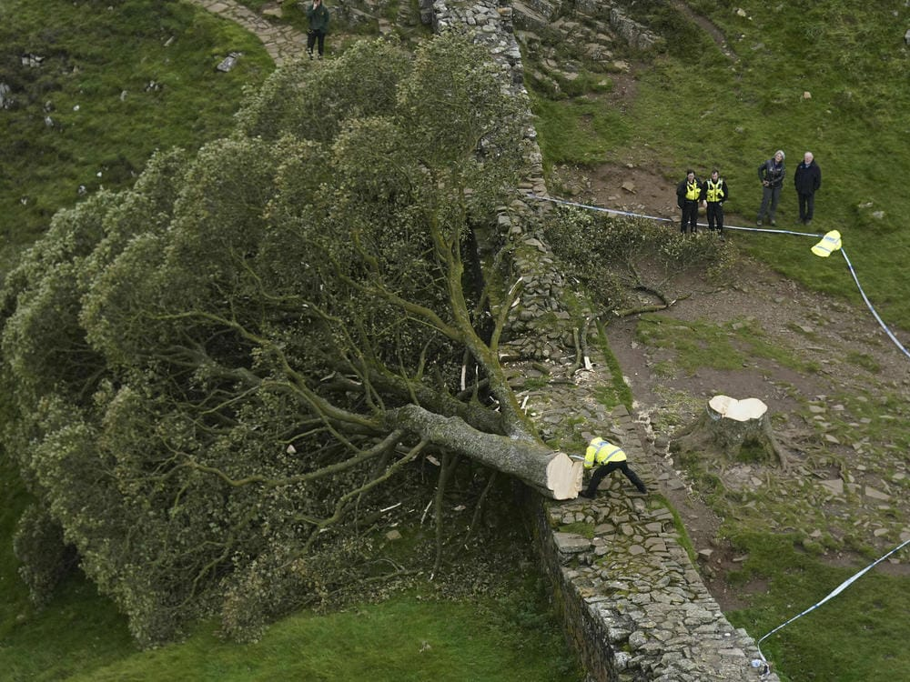
Hedge Trimming: Maintain the pristine appearance of your hedges with our precise trimming services. We ensure that your property's boundaries are not only well-defined but also aesthetically pleasing.
Why Choose Gro Pro Centurion:
Experience: With over 15 years in the industry, we bring a wealth of knowledge and expertise to every project, ensuring optimal results for our clients.
Professionalism: Our dedicated team of professionals is committed to delivering top-notch service with a focus on safety, reliability, and customer satisfaction.
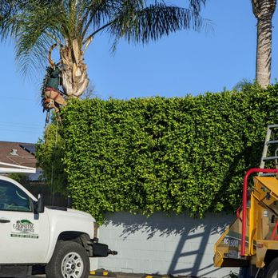
Local Presence: Situated in Centurion, we understand the unique needs of our local communities and take pride in serving Centurion, Pretoria, and Pretoria East.
br>
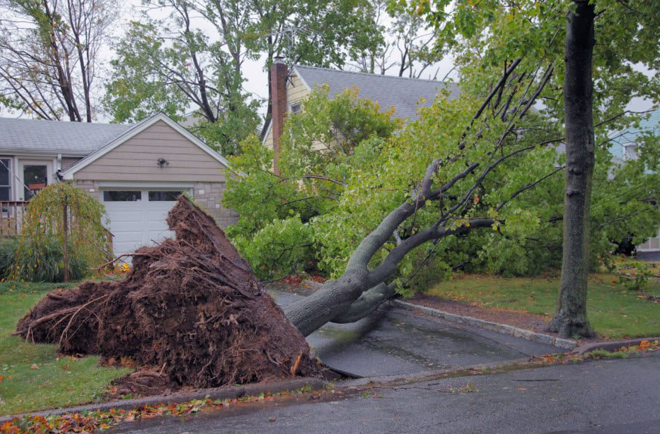
br>
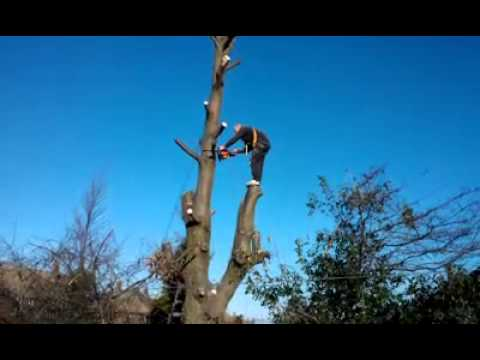
br>
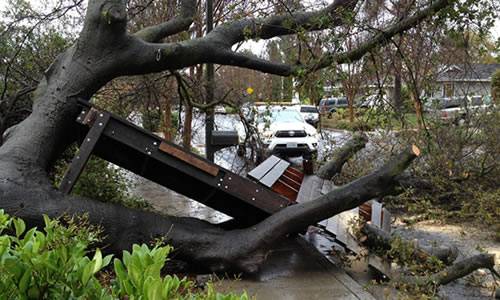
Comprehensive Services: From tree felling to landscaping, we offer a comprehensive range of services to cater to all your outdoor needs.
Transform your outdoor space with Gro Pro Centurion Tree Felling Landscaping Company – where experience meets excellence, and your vision becomes reality.